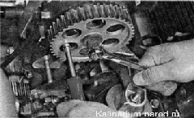
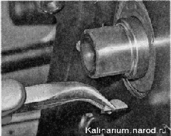
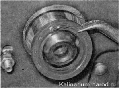
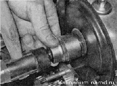

Сальник распределительного вала двигателя 1,6 л заменаПоследовательность выполнения 1. Снимаем ремень привода ГРМ. 2. Торцовым ключом на 10 мм, надетым на гайку крепления задней крышки ремня привода ГРМ, удерживаем шкив распределительного вала от проворачивания, ключом на 17 мм отворачиваем болт крепления шкива. 3. Снимаем шкив с вала. 4. Вынимаем из паза шпонку. При выполнении следующей операции не поцарапайте рабочую поверхность вала. 5. Поддеваем и извлекаем сальник из посадочного отверстия крюком, отверткой или плоскогубцами с загнутыми губками. 6. Смазываем рабочую поверхность нового сальника чистым моторным маслом и аккуратно надеваем сальник на вал. 7. Запрессовываем новый сальник, используя специальную оправку или торцовую головку на 30 мм.  8. Устанавливаем ремень привода ГРМ на место и регулируем его натяжение. 9. Устанавливаем детали, снятые при разборке, и регулируем натяжение ремня привода генератора. |